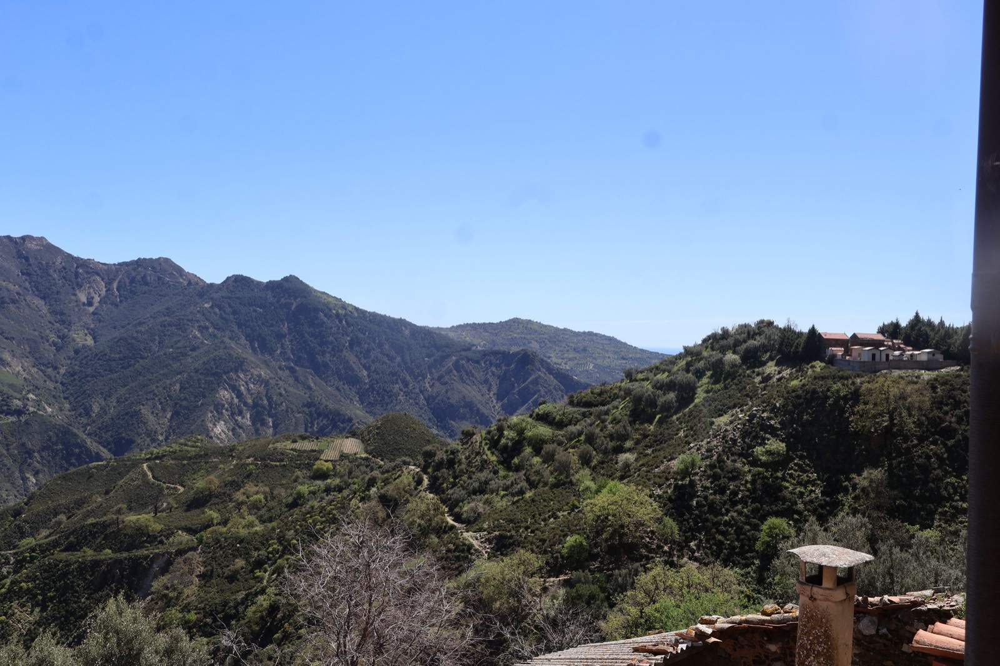

Το χωριό Gallicianò
Η ελληνόφωνη ακρόπολη που αιωρείται πάνω από την κοιλάδα του Amendolea
Περίπου 621 μ. υψόμετροΟικισμός του CondofuriΚαρδιά της Ελληνικής Καλαβρίας
Το Gallicianò είναι ένα από τα μέρη με τη μεγαλύτερη ταυτότητα στην ελληνόφωνη περιοχή της Καλαβρίας: ένα μαζεμένο, πέτρινο χωριό, με θέα στον ποταμό Amendolea (Fiumara Amendolea) και συνδεδεμένο με τη μνήμη της ελληνικής γλώσσας της Καλαβρίας. Οι δημόσιες πηγές το περιγράφουν ως ένα κέντρο ύψιστης πολιτιστικής αξίας, που συχνά αποκαλείται η ακρόπολη της Ελληνικής Καλαβρίας.
Πώς να το επισκεφθείτε: Επισκεφθείτε το αργά: μπείτε από το πάρκινγκ, ανεβείτε με τα πόδια στο χωριό, κοιτάξτε τα πέτρινα σπίτια, σταματήστε στα πανοραμικά σημεία και χρησιμοποιήστε τον οδηγό ως αφηγηματικό ίχνος, όχι ως υποχρεωτική διαδρομή. Η καλύτερη επίσκεψη είναι σύντομη, με σεβασμό και σιωπηλή: Το Gallicianò δεν καταναλώνεται, εισακούεται.
Αναφορές: Εθνικό Πάρκο Aspromonte, Calabria Straordinaria, Wikipedia